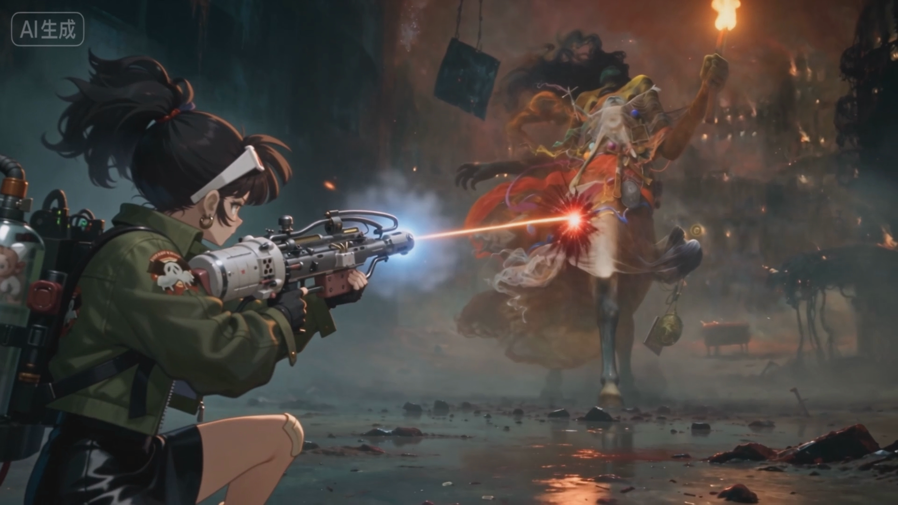
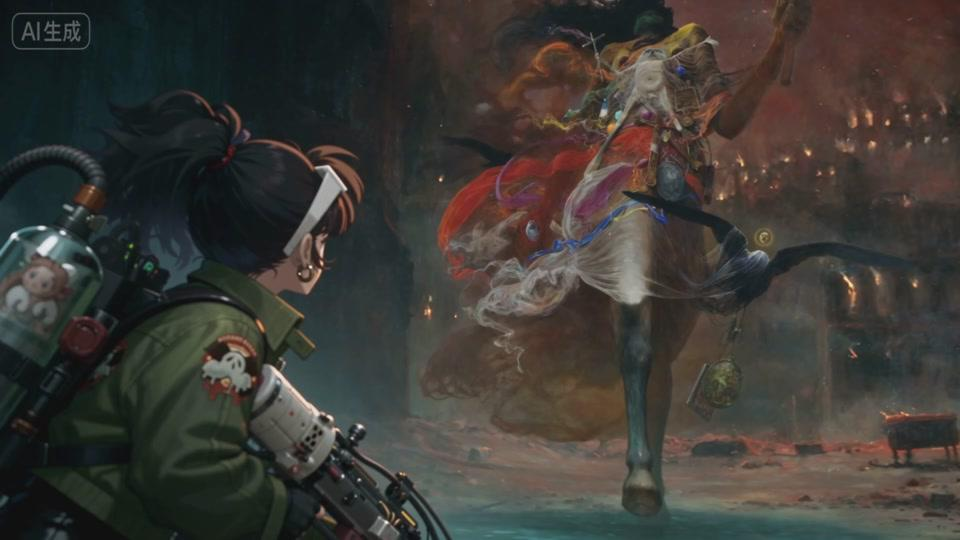

二次元原子朋克 TPS 多平台刷宝射击
角色驱动 · PVE 刷宝 · 原子朋克 · Build 长线
角色驱动 · PVE 刷宝 · 原子朋克 · Build 长线
本页以 PPTX 为唯一源文件，删除页脚与备注残留；正文文字保持原文，仅根据 HTML 阅读方式进行分组、层级与版式优化。

说明：以下内容按 HTML 版式重新分组，但每个正文文本块均来自 PPT 原文；页脚、页码、备注和模板残留已删除。
角色驱动 · PVE 刷宝 · 原子朋克 · Build 长线
PVP 射击是强竞技红海；PVE 刷宝更适合内容、数值、掉落、角色养成和版本更新形成长期目标。
核心竞争点：玩法新颖度、基础操作品质、匹配质量、竞技环境、反外挂、玩家规模、直播与社区生态。
刷宝类游戏有长期价值，并拥有稳定、明确的玩家群体。
当前爆破、MP、大逃杀、搜打撤基本已经失去天时，需要等待下一波创新玩法带来的增量。
结论：PVE 更适合作为较低风险、建立长线品类能力的产品形态。
按三层证据组织：最接近的商业样本、海外长线生命力、二游/PVE 关注度样本。
结论：以《逆战：未来》验证国内商业化最接近的机会，以 D2 / Warframe / Remnant2 验证射击刷宝长线生命力，再用二游/PVE PV 热度证明市场关注。
逆战：未来
首曝实机 PV：5小时150万+；后续约350万；测试PV约430万。
2017 上线；Steam 峰值约316k；上线初期100万+并发。
三端互通 + PVE 核心 + 赛季制 + 不卖强度数值。
80M+注册；2019收入约1.75亿美元。
B站游戏中心：首曝PV&实机演示约154万+播放、1400+评论。
200万+销量；净销售7亿瑞典克朗+。
作用：证明概念曝光具备讨论度。
数据口径：官方/财报/平台公开数据优先；播放量与收入估算需标注媒体或第三方来源，不作为最终财务承诺。
先打穿射击刷宝核心盘，再分别吸收射击玩法玩家与刷宝玩家；泛用户依赖角色、题材和低压 PVE 入口承接。
命运2 / Warframe / 遗迹2 / 逆战未来
越靠近中心，越应作为 Demo 和早期验证的评价标准。
首轮验证对象：枪感、掉落、Build 实验、终局追求是否成立。
泛用户：题材 / 角色 / 低压 PVE
次核心：射击 + 刷宝
和平 / 三角洲 / 瓦 · 流放之路 / 暗黑
射击玩家看 PVE 内容；刷宝玩家看词条、流派和赛季目标。
D2 / WF / R2 / NZ
和平 / 三角洲 / 瓦 · POE / 暗黑
角色、题材、美术、低压 PVE、朋友带入
依赖包装和引导扩量；不作为早期 Demo 硬核标准。
验证顺序：核心人群口碑 → 次核心转化 → 泛用户扩量
核心定义体验标准；次核心决定扩量空间；泛用户决定包装与引导上限。
机会来自 PVE 刷宝循环、二游角色资产和移动端低压力体验的交集。
关卡、击杀、掉落、构筑、挑战更高难度，天然支撑长线游玩。
角色标签、剧情包装和长期运营成熟，场景可部分偏向写实元素（明日方舟终末地）。
低精力、碎片化、重复刷图可能适配移动端；PC 作为品质展示。
用户为什么进来、为什么留下、为什么长期玩。
TPS 手感、刷怪反馈、Boss 压迫
角色吸引 → 射击爽感 → 掉落 Build → 长期留存
定义为：二次元原子朋克 TPS 多平台刷宝射击
年代感、美感、个性与 Cos 欲望，是情感连接和外观商业化核心。
第三人称承接角色露出与战斗爽感，形成刷图、掉落、改枪循环。
原子朋克、复古未来主义、多地域朋克主题构成差异化。
肉质、胶质、类人或动物，机械占比受控，强化击杀爽感。
大 Build 库结合推荐系统，兼顾易上手与难精通。
流派设计：职业适配推荐武器但不完全限制，保留玩家自由构筑空间。
M4、AK 等原型，适合作为新手基准流派。
弹丸散布、低射速、低弹匣，可扩展多种弹型。
移动压制、贴脸输出和连杀节奏。
弱点打击、精英处理和 Boss 阶段输出。
机器人、炮台、无人机形成协同作战。
技能模组：投掷类 / Buff 类 / 机动类；状态：流血、燃烧、感电、中毒。
长线运营：用随机、掉落赌博感、多角色养成和社交展示支撑长尾。
随机地图、地图 Buff、掉落赌博感、词条追求、多角色养成和社交展示钩子。
单局约 20 分钟，以 5 分钟为一个小节，并支持中途保存。
新角色、新地图、新剧情、新 Boss、新武器、新职业分支和新终局规则。
目标：初始版本 100h+，终局系统支撑 500h+ 长尾追求。
商业化设计：付费应服务角色和表达，不应替代刷图追求。
角色外观、武器外观、主题套装、职业幻想装扮、特效外观、轻量成长便利、赛季通行证、收藏展示内容。
不建议重度依赖强命座、强专武，避免破坏装备掉落、自由构筑和刷宝公平感。
以《逆战·未来》为主要参考：预计首年流水15亿~25亿左右。

这一页应该成为评审记住项目的风格锚点。
素材来自网络，仅示意风格：角色：来自重返未来1999场景&怪物：来自波兰艺术家 济斯瓦夫·贝克辛斯基的作品武器：来自原子之心
用于估算团队规模、成本与周期：以《遗迹 2》为体量主参考，再按三端互通与角色商业化调整。
近年中体量 TPS / PVE / Boss / Build 标杆，适合作为首发体量估算上限。
不是 Demo 范围；用于反推人力、成本和周期。以下为估算框架，后续可按预算压缩。
15 名左右可运营角色；每名具备基础皮肤、战斗动作、技能特效和角色标签。
3~4 个主题区域；至少 1 个强记忆点主场景，承接乐园 / 电视台 / 度假镇等方向。
6~8 类核心武器；先覆盖突击、喷子、冲锋、狙击、召唤/装置等代表流派。
80~120 个装备 / 词条 / 饰品件；支撑 6~8 条可感知流派。
6~8 个 Boss / 大型精英；区分机制 Boss、材料 Boss、剧情 Boss。
角色外观、武器皮肤、技能特效、通行证样张与收藏展示入口。
补充：主线 20+ 小时，全内容 60~100 小时，财报净销售 7 亿瑞典克朗+。
估算原则：以遗迹2为主参考，但 SPVE 因三端、F2P、角色商业化，成本结构会向角色 / 美术 / 运营倾斜。
射击、刷宝、二次元角色、美术融合、跨端与商业化能力必须同时成立。
三端互通、性能、包体、输入适配；
枪感、镜头、命中、换弹、受击反馈；
主题地图、精英怪、机制 Boss、复刷事件；
掉落、词条、饰品、流派和难度曲线；长线留存核心。
二次元角色是版本关注和外观商业化载体；
角色好看、世界危险、怪物可击杀；
外观、通行证、收藏展示、买量素材；参考逆战未来低数值干扰方向。
射击手感 > Build 掉落 > 角色厨力 > 跨端性能 > 关卡 Boss > 商业化闭环。
如果核心手感、PVE 内容或 Build 欲望任一项不成立，项目不宜直接进入完整量产。
扩张原则：概念验证 → Demo → VS → 量产准备 → 首发量产
0~12 个月完成从方向收敛到量产准备，后续进入首发量产。
立项书、竞品数据、首发范围、风险清单
枪感、角色灰盒、精英怪、基础掉落反馈
1角色、1关卡、1Boss、2条 Build
多角色、多地图、多Boss、多流派与测试
新项目应从第一天开始，让数据、讨论、决策和内容生产适配人机协作。
不只是工具，而是工作方式
从立项阶段定义 AI 友好的数据格式、文档结构和协作标准。
内容量产、规则组合、版本迭代环节更多，更容易结构化拆分。
竞品、系统、版本方案、反馈归因，都默认进入 AI 辅助讨论。
数据 AI 友好；问题拆解成框架；决策过程留依据、可追溯。
项目价值：射击游戏品类研发，二次元管线，AI Native团队积累。
通过该研目积累新一代的射击游戏品类研发团队经验，待有合适玩法机会可把握PVP竞技方向。
可积累二次元世界构建、角色设计、渲染管线等团队经验，为后续重度游戏的研发积累竞争优势。
自组建起完全融入人机合作范式，积累研发与设计数据资产，提高生产效能。